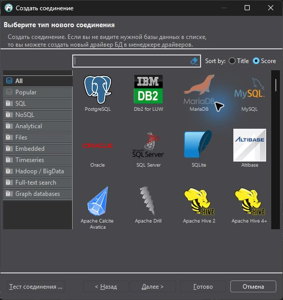
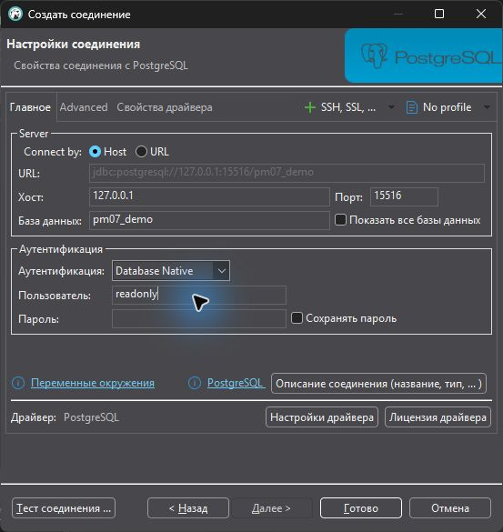
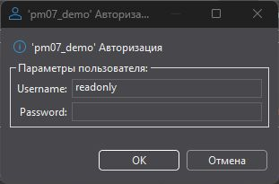
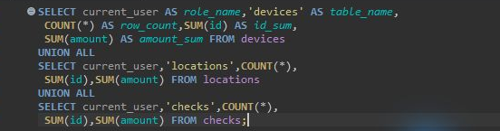
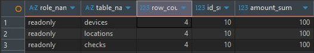

Выберите один маршрут¶
До первого действия¶
Откройте в отдельном списке областей вариант с вашим номером из списка группы. Выберите маршрут по обоим значениям из карточки: СУБД и ОС. Для Ubuntu Server и Debian используйте Linux-маршрут соответствующей СУБД. Версия сервера должна совпадать с карточкой.
| Маршрут | Когда использовать | Первое действие |
|---|---|---|
| MySQL 8 · Linux | Варианты 01, 02, 03, 11, 12, 15, 26, 30 | Откройте этот маршрут и заполните его исходные параметры. |
| MariaDB 10 · Linux | Варианты 04, 05, 06, 13, 17, 24, 29 | Откройте этот маршрут и заполните его исходные параметры. |
| PostgreSQL 15/16 · Linux | Варианты 07, 08, 09, 10, 14, 16, 25, 27 | Откройте этот маршрут и заполните его исходные параметры. |
| SQL Server Express · Windows | Варианты 18, 19, 20, 21, 28 | Откройте этот маршрут и заполните его исходные параметры. |
| MySQL 8 · Windows | Варианты 22 | Откройте этот маршрут и заполните его исходные параметры. |
| PostgreSQL 16 · Windows | Варианты 23 | Откройте этот маршрут и заполните его исходные параметры. |
Правило выбора¶
Не выбирайте СУБД по знакомому названию команды. Например, mariadb-dump относится к MariaDB, а pg_restore — к архивам PostgreSQL. SQL Server Express использует Планировщик заданий Windows; SQL Server Agent для этого маршрута не требуется.
С чего начать в своём проекте¶
Создайте рабочую папку первым блоком своего маршрута. Выполните команды в терминале учебной машины, куда вошли по паспорту среды. Этот терминал может быть открыт у вас на экране, но его файлы лежат на учебной машине. Проверьте pwd в Linux или Get-Location в PowerShell. Нужна папка pm07 в домашнем каталоге Linux или C:\Practice07 на учебной Windows.
Получите адрес SQL своего варианта¶
В файле «Список предметных областей» откройте ссылку «Скачайте SQL только варианта …» из своей карточки. На открывшейся странице скопируйте адрес из строки браузера. Для варианта 05 адрес заканчивается на variant-05.sql. Если браузер скачал файл сразу, воспользуйтесь переносом готового файла ниже.
Если учебная машина может скачать файл сама¶
В терминале учебной Linux-машины выполните cd "$HOME/pm07". Отдельно выполните read -r -p 'Адрес ссылки на SQL: ' sql_url. Когда появится запрос, вставьте адрес и нажмите Enter. Затем выполните следующий блок.
curl -fL -o input.sql.download -- "$sql_url" &&
mv -- input.sql.download input.sql &&
head -n 3 input.sql
В Windows PowerShell на учебной машине выполните Set-Location -LiteralPath 'C:\Practice07', затем отдельно $SqlUrl = Read-Host 'Адрес ссылки на SQL'. Вставьте адрес и нажмите Enter. Затем выполните следующий блок.
$Download = @{
Uri = $SqlUrl
UseBasicParsing = $true
OutFile = 'input.sql.download'
ErrorAction = 'Stop'
}
try {
Invoke-WebRequest @Download
Move-Item input.sql.download input.sql -Force
Get-Content input.sql -Encoding UTF8 -TotalCount 3
} catch {
Write-Warning $_.Exception.Message
}
Если скачивание выдало ошибку, остановитесь и воспользуйтесь следующим способом. Файл с расширением .download мог записаться не полностью.
Если файл скачан на ваш компьютер¶
Откройте скачанный variant-NN.sql текстовым редактором на своём компьютере. Проверьте номер в первой строке. Если паспорт среды указывает общую папку для передачи, скопируйте туда файл через Проводник, откройте эту папку на учебной машине и скопируйте файл в рабочую папку под именем input.sql.
Если доступно копирование текста в учебный сеанс, выделите весь SQL в редакторе (Ctrl+A, Ctrl+C). На учебной Linux-машине в рабочей папке выполните nano input.sql. В открытом редакторе вставьте текст через меню терминала «Вставить» и сохраните Ctrl+O, Enter, Ctrl+X. В Windows выполните notepad.exe C:\Practice07\input.sql на учебной машине, вставьте текст в Блокнот и сохраните файл в UTF-8 под точным именем input.sql. Если доступна только консоль без вставки, запросите у преподавателя выданный способ переноса и путь назначения.
Проверьте файл перед подключением¶
В рабочей папке на учебной машине проверьте имя, размер и первые строки файла. Найдите в нём проверочную вставку.
Get-Item -LiteralPath input.sql
Get-Content -LiteralPath input.sql -Encoding UTF8 -TotalCount 3
$Marker = 'INSERT INTO access_probe VALUES (1,10);'
Select-String -Path input.sql -Encoding UTF8 -SimpleMatch $Marker
В первой строке должен быть ваш номер, а поиск должен найти строку INSERT INTO access_probe VALUES (1,10);. Если команда сообщает об отсутствии файла, сначала проверьте рабочую папку и расширение .sql.
Вернитесь в свой маршрут и откройте шаг входа начальным администратором. Перед загрузкой замените имена базы, таблиц и файлов по таблице подстановок. В результате первого контрольного запроса по каждой предметной таблице ожидаются 4 строки, сумма id 10 и сумма amount 100.
Подключение в DBeaver: разбор на образце¶
Выберите свой драйвер¶
На снимках показан PostgreSQL и учебная база pm07_demo. Сначала «База данных» → «Новое соединение» либо Ctrl+Shift+N. Выберите PostgreSQL, MySQL, MariaDB или SQL Server по своей карточке, затем «Далее». Драйвер PostgreSQL не подходит для MySQL, даже если имя базы одинаковое.

Перепишите параметры из паспорта¶
В примере сервер доступен с хоста по 127.0.0.1:15516. У себя перепишите адрес и порт именно клиентского подключения, имя своей базы и readonly. Отключите «Сохранять пароль», затем нажмите «Тест соединения». Названия полей могут быть на русском или английском языке.

Введите пароль в отдельном окне¶
Если сохранение отключено, поле Password основной формы недоступно. Введите пароль readonly в появившемся окне авторизации. При запросе Download driver используйте заранее подготовленный преподавателем клиент. Успешный тест должен сообщить об установленном соединении; затем «Готово». При первом открытии консоли пароль может запрашиваться снова: это не ошибка входа.

Откройте консоль и выполните запрос¶
Выделите своё соединение слева. В меню «Редактор SQL» выберите «Open SQL console», либо нажмите Ctrl+Alt+Enter. Вставьте контрольный SELECT своего маршрута; Ctrl+Enter выполняет текущий запрос. В примере три SELECT объединены UNION ALL, чтобы одновременно видеть все предметные таблицы.

Сопоставьте результат с CLI¶
Внизу появляются строки результата, а не только текст запроса. В образце у каждой таблицы 4 строки, сумма id 10, сумма amount 100; роль readonly. У себя должны совпасть имена и значения своего SQL-файла. Пустая таблица результатов, запрос к чужой базе или ошибка входа не подтверждают выполнение.
